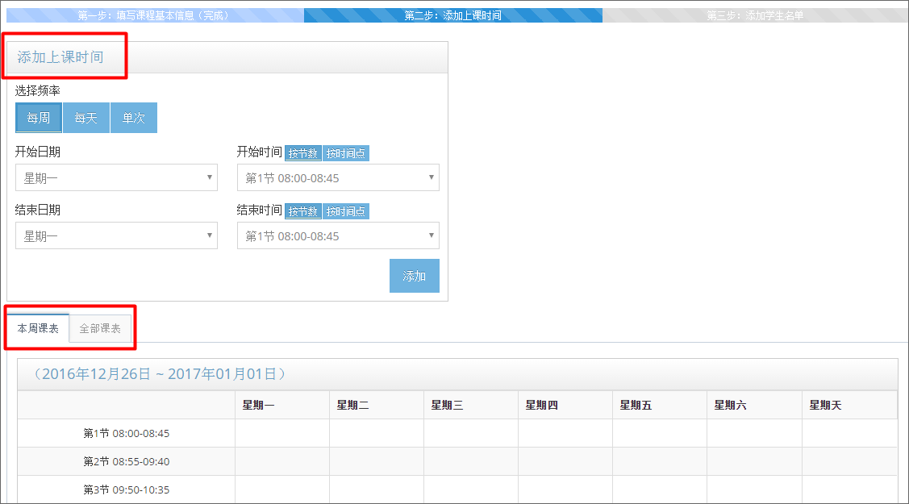
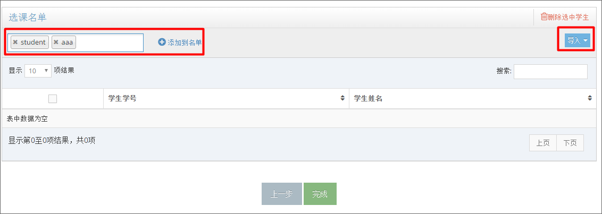

5.课程管理¶
{kind=link}
5.1.添加课程¶
单击 <课程管理> 系统操作界面的 【创建课程】 按钮，系统会跳转到 <添加课程> 界面。
5.1.1.课程基本信息¶
输入 “课程名称”，“授课老师”，设置 “开始日期” 和 “结束日期”，并下拉勾选 “课程镜像”、“配置类型”、和 “桌面数量” ，点击更多选项时，用户可以选填 “指定课室” 、“虚拟内网” 、“应用黑名单” 和 “混合计算策略” 等信息，完成后单击 <添加课程> 弹窗的 【创建课程】 按钮，即可完成课程的创建。
参数名称 参数说明 课程镜像 针对课程需要制作的镜像，其中包括最低硬件需求和软件配置， <br>上该课程的所有学生都使用同样的镜像。 配置类型 定义了课程桌面使用的硬件配置，命名方式为： <br>配置名称-CPU数量-内存大小-磁盘大小。 虚拟内网 云桌面系统在网络设置上组建了虚拟内网，不同的课程可以安 <br>排在不同的子网中 客户端连接协议 默认连接协议是RDP，RDP协议能够为云桌面连接提供更好的支持， <br>但是当云桌面使用的镜像的操作系统为linux时，建议使用spice， <br>如果当前云桌面使用有问题可以尝试更换使用协议以支持不同类 <br>型的数据传输。 课程外设策略 课程策略是组内学生使用云桌面的权限控制，如是否开放USB权 <br>限、剪切板策略等。具体配置见“系统配置”的“系统策略”功能 应用黑名单 应用黑名单是指在学生使用虚拟桌面时，管理员对云桌面部 <br>分应用、软件实行禁用。 融合计算策略 融合计算功能是为了综合利用云服务器和本地终端计算能力， <br>通过融合计算，重量级应用可以通过映射在云桌面启动和使用， <br>运行环境实为本地机，从而保证用户使用计算和图形密集型应 <br>用时有良好的体验。 安全组 安全组功能类似于防火墙，新建一个安全组可以规定其与外 <br>部网络连通的情况。可在自定义的安全组中规定一定的访问 <br>规则，在安全组访问名黑单内的网络是不能够进行访问的， <br>黑名单内的外部网络也是不能够访问云桌面的。 图5-1-1 课程部分参数说明
图5-1-2 添加课程-基本信息
{kind=link}
5.1.2.添加上课时间¶
添加上课时间有三种频率，分别为：每周、每天 和 单次，可以根据需要在 <添加上课时间> 表格中根据需要选择频率，通过下拉菜单选择 开始 和 结束 日期。课程的开始时间可以按照系统设定的上课时间按照节数选择，也可以按照时间点确定。信息填写完成后点击 【确认】 按钮，页面会自动刷新，在 <实时课程表> 中可以看到最终的排课结果。
图5-1-3 添加课程-上课时间
<实时课程表> 是由计划课程表和校历共同调度的，在实时课程表中会显示哪天放假，哪天补哪天的课程。在实时课程中无法编辑正常开课课时，只允许取消手动开课课时，点击 【编辑】 按钮，实时课程表进入编辑状态，鼠标点击取消绿色的手动开课课时，点击 【保存】 按钮，系统弹框显示 ”确认取消手动开课计划？“，点击弹框中 【确认】 按钮，将删除手动开课课时。
注：手动开课计划无法在实时课程表页面通过编辑直接添加，只允许删除
图5-1-4 实时课程表
图5-1-4 取消手动课时
<计划课程表> 是课程创建时的开课计划，如果系统没有设置校历，实时课程表将和计划课程表一致，用户可以在 <计划课程表> 页面，通过编辑添加或删除课时。详见5.2编辑课程中的修改上课时间。
图5-1-4 计划课程表
{kind=link}
{kind=link}
{kind=link}
{kind=link}
5.1.3.添加学生名单¶
创建课程的最后一步可以添加该课程中的学生，添加学生有两种操作方式：
添加方法一： 直接在页面左上角 <搜索框> 查找学生，在搜索结果中点击该学生名字，可以加多个学生到搜索框。点击搜索框右侧 【添加到名单】 按钮，将被选中的学生加入当前课程。（注意：用户只有已经存于系统才能被搜索到，也就是只能搜索到“用户管理-学生”列表中的学生）
添加方法二： 点击右上角 【导入】 按钮，可以批量导入学生名单，具体可参考“16.1.常见操作案例-批量导入用户”。
图5-1-5 添加课程-添加学生
{kind=link}
5.1.4.创建过程中删除学生¶
{kind=link}
5.2.编辑课程¶
5.2.1.修改基本信息¶
在 <课程管理> 界面的课程列表中,点击课程名称，跳转到课程详情界面。点击想要修改的内容，该部分会变为可编辑状态，编辑完成后点击 【对勾】 按钮，保存修改的信息，点击 【叉号】 取消修改。
注意：如果修改涉及模板、桌面配置、课程策略等，则原有的、已创建虚拟机的用户桌面，将保留旧有的配置，而修改后新添加的桌面，将按照修改后的新信息进行创建。
图5-2-1 课程详情
用户需要修改上课时间时，点击打开 <计划课程表>，添加的方式有两种，第一种为批量添加，第二种为修改（图形化操作，可以增删，适用于少量的课程修改操作）。操作按钮在课程表右上角，参见图5-2-2。
图5-2-2 课程时间修改
方式一： 点击 【创建】 按钮，弹出 <添加上课时间> 窗口参见图5-2-3，根据需要选择添加频率、开始和结束日期。选择完成后点击 【添加】 按钮，则会添加对应时间进入该课程。
图5-2-3 添加上课时间
方式二： 点击 【编辑】 按钮，则课程表变为可编辑状态，鼠标移动到要添加或者删除的位置，如果该时段原本设置为上课，点击后则为不上课，反之亦然。修改完成后点击 【保存】 按钮可以保存当前修改。参见图5-2-4。
图5-2-4 修改上课时间
{kind=link}
{kind=link}
{kind=link}
{kind=link}
5.2.2.修改课程成员¶
{kind=link}
5.2.3.课程桌面¶
在 <课程详情> 第三个分页中，显示了该课程对应的所有课程桌面，管理员可以对课程桌面进行绑定和解绑操作。点击桌面最右边 【绑定】 或者 【解绑】 操作可以完成对应操作。
状态说明：绑定状态的产生有两种情况:
一种是学生使用账号密码登陆，占用该桌面，那么该桌面就和这个学生的账号进行了绑定。
另一种是管理员手动绑定，管理员绑定后该桌面只能被绑定对象使用，如果该对象不登录系统那么桌面将会处于空间状态，也不能被其他人使用。
解绑操作将回收ip，如果该ip正在被学生占用，那么解绑操作会导致该学生掉线。学生正在进行的操作会被保存在服务器，该学生若需要找回先前操作，需要先于别人拿回之前使用的ip。
具体操作：点击 【绑定】 按钮，弹出对话框选择学生，选择完成后点击 【绑定】 按钮进行确认。若需要取消绑定，点击 【解绑】 按钮，并在对话框中确认。具体参考图5-2-6、5-2-7和5-2-8.
图5-2-6 课程桌面
图5-2-7 绑定桌面弹窗
图5-2-8 解绑确认弹窗
{kind=link}
{kind=link}
{kind=link}
{kind=link}
{kind=link}
{kind=link}
{kind=link}